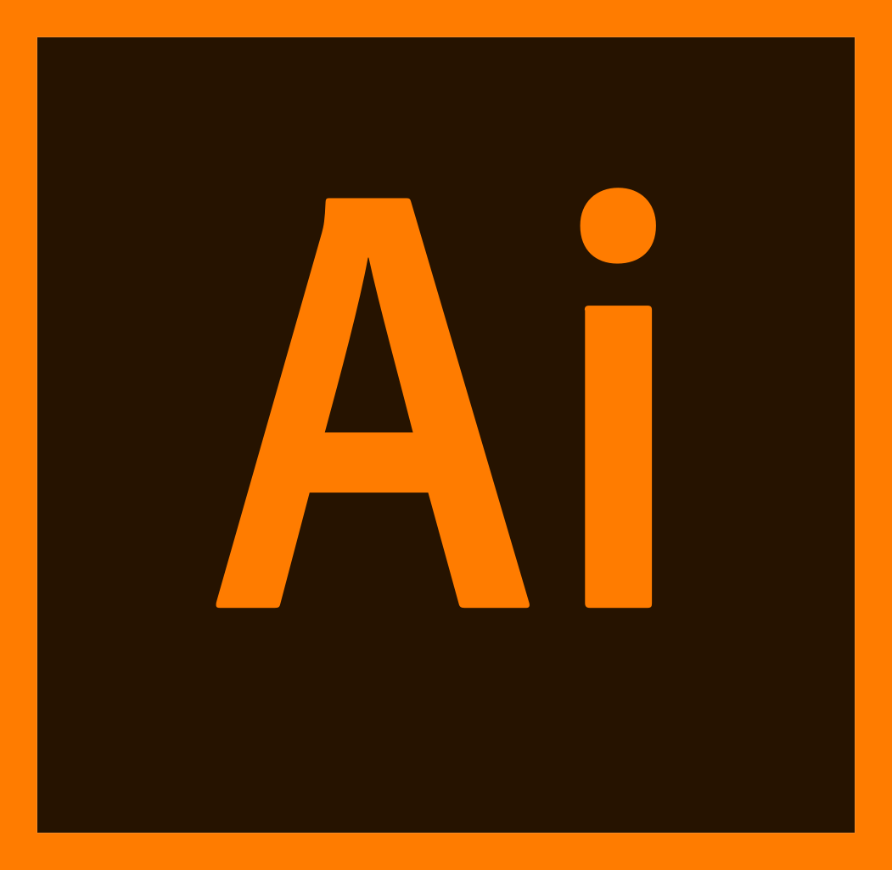
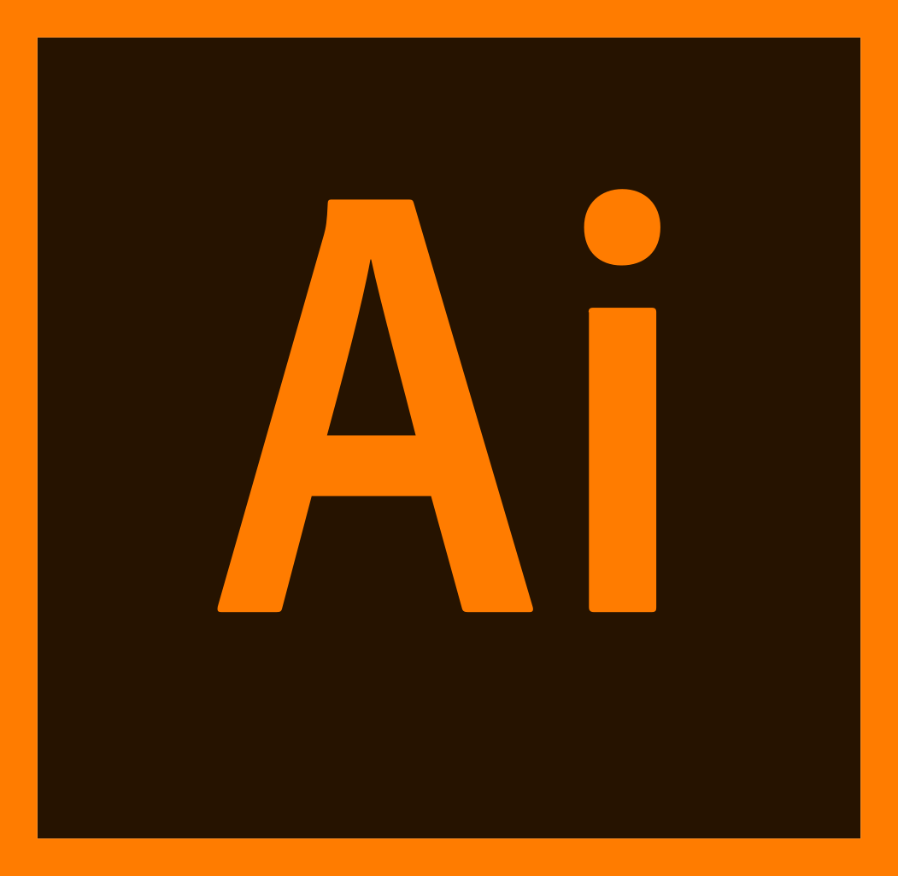

L'une des qualités qu'il faut vraiment avoir dans ce métier c'est, à mon sens, la curiosité. Il faut s'avoir s'informer sur comment les besoins évoluent.
Les compétences de l'UX/UI designer
- Être créatif
- Savoir être à l'écoute
- Effectuer une veille efficace
- Être curieux, s'intéresser aux besoins des utilisateurs dans tous les domaines
Mon téléphone et mon ordinateur sont les premiers outils, mais mes outils préférés restent mon crayon et mon carnet.
Les outils de l'UX/UI designer

 
